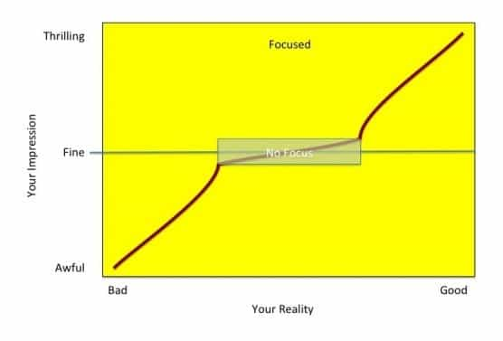

Libertas is a young bard traveling along the endless road to self-improvement and recounting his adventures. You can follow him on Twitter.


Countless words have been written about the role of attention whoring in the game today. While this is considerable, it’s worth paying attention to the concept of attention itself. Specifically, it’s worth noting how you can use it to your advantage. Channeling your attention correctly is perhaps the most powerful thing you can do, especially for your inner game.
For starters, the brain evolved to place extreme importance on those things it focuses on. Robert Cialdini, the “Godfather of Influence,” says in his new book Pre-Suasion:
Why do we typically assume that whatever we are focusing on in the moment is especially important? One reason is that whatever we are focusing on is especially important in the moment. It’s only reasonable to give heightened attention to those factors that have the most significance and utility for us in a particular situation: a strange noise in the dark, the smell of smoke in a theater, a CEO standing to speak.
This sensible system of focusing our limited attention resources on what does indeed possess special import has an imperfection, though: we can be brought to the mistaken belief that something is important merely because we have been led by some irrelevant factor to give it our narrowed attention. All too often, people believe that if they have paid attention to an idea or event or group, it must be important enough to warrant the consideration. That’s not true.
This is something known as the “focusing illusion.” Being aware of and compensating for this can make you a lot more confident, productive, and resilient. Though I’ve stumbled onto this in my experiences, Cialdini’s words crystallized them for me, making the distillation of experience into a productive system possible. Here are a few things I’ve learned about channeling attention to maximize your life and for our purposes, your game. Specifically, I’m going to talk about approaching in this column.

For starters, I don’t rate girls on the 1-10 scale. It always seemed like a roundabout, unnecessary exercise to me, but more important than that, it might actively harm you. Why? Because rating a girl on the scale puts your focus on that rating. In Pre-Suasion’s second chapter, Cialdini discusses the concept of “target chuting.”
Suppose, for instance, that I have the thankless job of trying to get your signature and information for something on the street. You know how this goes, you almost never stop. Yet, that’s often because the people vying for your time are priming you in the wrong way. One group of people I encounter a lot in my neighborhood (by the nearby campus, of course) asks me “do you have time for LGBT rights?” Note the value-taking opener here. But, what if they were to ask me if “I was a helpful person?” Cialdini shows us that this is what a couple of communication scientists did when experimenting to see what lines of questioning to get people to stop and comply with survey requests in a mall. They found that asking their prospects: “do you consider yourself a helpful person?” resulted in 77% of the people they asked stopping and cooperating with them.
Why was this? The answer is that the scientists elevated attention to the concept of being helpful instead of asking for their prospects’ precious time. Most people want to think of themselves as helpful, and most people will have memories of being helpful. In effect, by asking the question, you’ve sent your prospect down a targeted “chute” and focused on that person’s experiences. In this moment, that person will be much more receptive to aligned requests (in this case, helping out with a survey or even giving out personal information), hence the title Pre-Suasion.
That was an admittedly roundabout explanation of “target chuting,” but there you have it. Getting back to my decision not to rate girls on the 10 scale, you might now see why. By rating, you elevate your attention (and thus the perceived importance) to that rating, rather than your own game or more helpful cues in the environment, and by doing so, you’ve gone down a chute that isn’t really focused on your purpose. You may begin to grow anxious, pumping yourself with worry because you’re “approaching a 9.” That isn’t to say that some girls aren’t hotter or much hotter than others of course, but I try to focus my attention on those things that can assist my game, rather than, at best, present me with redundancies.
Generally speaking, half the game is overcoming your anxieties with women. Having too many things to focus on will tend to increase those anxieties. The more things you have to think about, the more imaginary fears you can create as a result of them, and now elevated in your attention, you assign undue importance to them. That’s why I try to take an approach that’s focused as narrowly as possible.
But now that we’ve focused on something that I don’t think you shouldn’t focus on, what are those things that you should to make yourself more formidable?
I first look for signs that she’s receptive to an approach. I’m a big believer in proper target selection, so, aside from her actually being a girl I desire, that’s what I pay attention to first. I never had the inclination to mass approach, though in some ways that style is better suited to the “channeled attention” system, as Cialdini might call it, because approaching any girl gives you one thing less to think about. Nevertheless, those indicators of receptivity are generally reliable, and my mass approacher friends have as many blow offs as hooks, so I focus on receptivity first.
Once you’ve established that you want her and you think she’s receptive, you must stop everything you’re doing and move toward her immediately. If you pay attention to anything else, you’re likely to lose the approach.
Something odd developed after my initial phase in the game where I was ecstatic at overcoming my approach anxiety. My approach rate slowed. It’s not necessarily that there was less girls I was interested in, it’s just that I wasn’t following through as often, for reasons that were often more indifference than fear. Why?
As it turns out, after that initial period of excitement created by doing something I never thought I could do before, I began to realize that I actually got more work done outside than inside. It was an environment that allowed me to focus more. So I started going outside to read good books and get more writing projects done. Day game wasn’t my sole focus anymore. Lo and behold, my attention was thus divided. With two things competing for it, I would more often take the path of least resistance. When I understood this, I began to put a higher priority on approaching girls I was genuinely attracted to. When I saw a girl I liked, I would put my stuff down and focus only on her, what I liked about her, and putting one foot in front of the other. This ordering or sorting of my attention solved for this.
Understand that people can only focus on one thing at a time. Multitasking doesn’t exist. To maximize your productivity, you have to make sure to sort and narrow the tasks before you. When it comes to approaching, your focus should be channeled as much as possible on your girl and nothing else.
The simple system can go like this:
There are many more applications to this Pre-Suasion channeled attention approach to your game that I intended on going into (particularly its applicability in opening, conversation, and texting), but I’m butted up against my limits. Look for more to come.
Read More: How To Meet And Date Mormon Girls